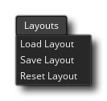

该菜单是关于保存载入不同 IDE 布局的。你可以通过把某些界面元素（如资源树或输出窗口等）安排成异于默认布局的方式来把IDE配置成任何你想要的布局。这就允许你去设置 GameMaker Studio 2 来适应你的工作流程，而使用该菜单中的选项你可以保存当前项目的布局为一个 *.xml 文件，这个文件还可以被载入到任意一个项目当中来把IDE设置为同样的布局。该菜单有如下选项：
- 载入布局（Load Layout） - 该选项会打开一个文件资源管理器，在这里你可以选择载入之前被保存过的 *.xml 布局文件。
- 保存布局（Save Layout） - 该选项会打开一个文件资源管理器，在这里你可以命名当前IDE布局并将其保存为一个 *.xml 文件。
- 重置布局（Reset Layout） - 该选项会将IDE布局重置为默认设定。